IOANA MITELEA
JUNIOR FRONT-END NINJA
Work experience
Opearlo - The Voice Design Agency
Junior Front-End Developer
August 2016 - November 2016 - London, United Kingdom
One of the main tasks was to build the graphs and integrate them in the dashboard. Technologies used were React and Recharts library.
Another task was to build an Amazon Alexa Skill and include it in the Opearlo Analytics. Technology used was Nodejs.
Digital Monkeyz
Freelancer
Octomber 2015 - July 2016 - Bucharest, Romania
I've been learning programming since then and trying to build my own portfolio. I have also worked on small projects for romanian clients.
Education
National College "Cuza-Voda"
Husi, Vaslui, Romania
September 2008- June 2012
Major: Philology
Faculty Of Psychology, University Of Bucharest - BSc
Bucharest, Romania
October 2013 - May 2016
Major: Psychological testing
Online courses: Front-End Web Development Nanodegree, Udacity
November 2016 - May 2017